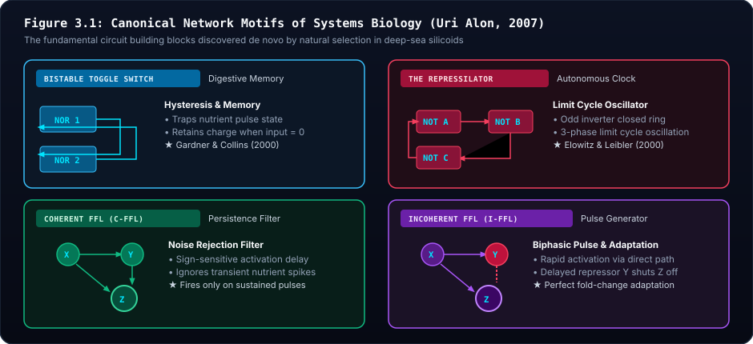
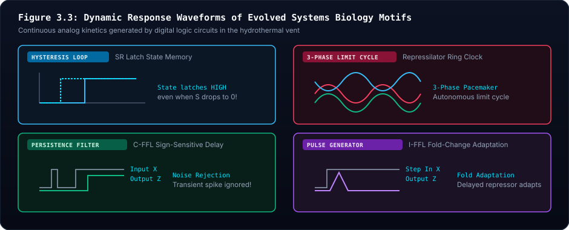
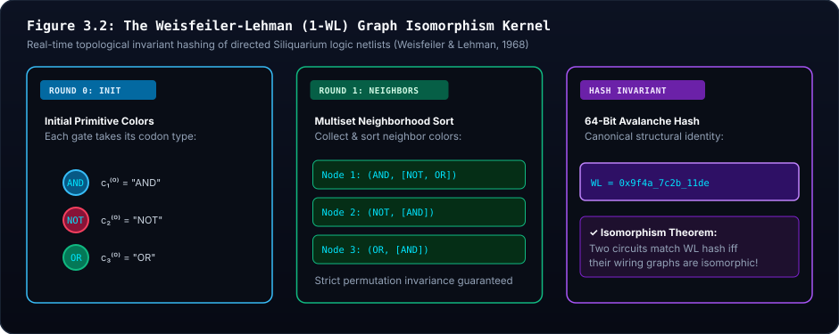

🕸️ Unit 3: Systems Biology & Uri Alon's Network Motifs
Canonical Regulatory Motifs, Cellular Memory as Digestive Latches, and Weisfeiler-Lehman[5] Graph Invariant Hashing
1. Visceral Intuition: The Recurring Lego Bricks of Life
If you open the chassis of a jet engine, a smartphone, or a television, you will find certain fundamental electronic sub-circuits repeated over and over: amplifiers, debouncers, delay timers, and memory registers.
In the late 1990s and early 2000s, systems biologist Uri Alon asked a radical question: Does biological evolution rely on the same fundamental sub-circuit building blocks?
Analyzing the transcriptional regulatory networks of Escherichia coli and Saccharomyces cerevisiae, Alon made an astonishing discovery: certain compact, directed subgraph patterns appear hundreds to thousands of times more frequently in living organisms than would occur in an equivalent randomized network.
Alon termed these recurring functional patterns Network Motifs (Alon, 2007, 2019)[1].
Natural selection acts as a powerful sieve, repeatedly preserving certain compact, directed subgraph patterns that confer vital physiological advantages: cellular memory, autonomous timing, noise filtration, and pulse generation.
In Siliquarium, the DigitalPaleontologist and MotifScanner act as an automated, passive external voltmeter, detecting when living silicoids evolve these canonical network motifs de novo.
1.1 Network Motifs as Chapters in the Genetic Book of the Dead
Why do network motifs recur across entirely unrelated phylogenetic lineages, and why does an automated Paleontologist discover them in digital silicoids?
The answer lies in Richard Dawkins' thesis in The Genetic Book of the Dead (2024)[6]: Every evolved network motif is a physical chapter written by the temporal and statistical dynamics of the environment.
- The Bistable Latch is the environmental record of temporal hysteresis: when electron donor pulses and oxidizer pulses are separated by time delays, only an organism that records the past can digest the present.
- The Repressilator Ring Oscillator is the environmental record of diurnal and hydrothermal periodicity: when external energy fluxes oscillate sluggishly, an internal autonomous limit cycle keeps the organism synchronized with the rhythm of the vent.
- The Feed-Forward Loop (C-FFL) is the environmental record of thermal noise: in a turbulent fluid regime where single-tick false alarms are common, persistence delay filtration ensures that costly metabolic cascades are triggered only by sustained, genuine food streams.
- The Incoherent FFL (I-FFL) is the environmental record of step-change sensory saturation: it computes a derivative pulse ($d/dt$), resetting baseline sensitivity so the organism can detect further increases in nutrient concentration.
In the words of Motoo Kimura (1961)[7], natural selection acts as an informational channel accumulating environmental structure into the gene pool at a rate proportional to fitness variance: $\Delta I \approx V_W / [2\bar{W}^2 \ln 2]$. When an organism evolves a network motif, it has not "invented" a circuit; the selective deaths of countless ancestors have etched the dynamical laws of the hydrothermal vent directly into its genome.
2. Canonical Network Motifs: The Rosetta Stone of Living Logic
Complete Circuit Taxonomy: For an exhaustive, illustrated catalog covering all 10 circuits and macro-adaptations recognized by the Paleontologist (including Half-Adders, Negative Autoregulation, Organelle Cassettes, Syncytial Colonies, and Spore Engines), see the Circuit Paleontology Field Guide.
Siliquarium establishes a direct biophysical correspondence between digital hardware circuits and verified molecular regulatory networks:

Figure 3.1 Architectural Breakdown: Canonical Systems Biology Regulatory Motifs
- 🔍 Visual Guide & Structural Mechanics: Displays the four foundational network motifs discovered by Uri Alon in E. coli and yeast: 1) The Bistable Toggle Switch[2] (cross-coupled
NORorNANDgates with feedback wires), 2) The Repressilator[3] (an odd-numbered cyclic ring oscillator of invertingNOTgates), 3) The Coherent Feed-Forward Loop (C-FFL, where $X$ and $Y$ jointly activate target $Z$), and 4) The Incoherent Feed-Forward Loop (I-FFL, where $X$ activates $Z$ while simultaneously activating inhibitor $Y$). - 🔬 Biophysical & Mathematical Reality: While random network graphs exhibit Poisson or power-law degree distributions without enriched subgraphs, natural selection preferentially preserves these four motifs because they solve universal dynamical problems: bistable state memory, autonomous circadian pacing, noise rejection, and fold-change sensory adaptation.
- 💻 Digital Mapping & Silicon Architecture: Scanned dynamically by
MotifScanner.ts. When an organism's directed netlist matches one of these topologies and demonstrates functional dynamical fidelity (e.g., hysteresis or limit-cycle oscillation), the Paleontologist logs an evolutionary milestone inEvolutionaryFlightRecorder.ts. - 🏛️ Core Principle & Intuitive Summary: Nature Reinvents the Same Circuit Blocks Everywhere. From bacterial plasmids to human stem cell differentiation, evolution converges on the exact same functional wiring motifs.
2.1 The Bistable Toggle Switch (SR Latch) & Memory as Digestive Preservation
- Hardware Architecture: Two cross-coupled inverting gates (
NORorNAND) with feedback wires returning each output to the other gate's input. - Biological Regulatory Cognate: The Synthetic Genetic Toggle Switch constructed by Tim Gardner and Jim Collins (2000), modeling the natural lysis-versus-lysogeny switch of Bacteriophage $\lambda$.
- Biophysical Function in Siliquarium: In the hydrothermal vent, nutrient streams often arrive with temporal phase delays: Stream A pulses in the morning, but Stream B only arrives hours later in the afternoon. A simple combinational cell without memory cannot eat because Stream A has already washed away by the time Stream B appears!
- When an organism mutates a feedback loop forming a bistable latch, it traps the electrical charge of Stream A in an internal state loop.
- When Stream B finally arrives, the stored state completes the catalytic reaction!
- Memory did not evolve for abstract cognition; memory evolved as a digestive food preservation strategy!
2.2 The Repressilator (Ring Oscillator) & Autonomous Circadian Timing
- Hardware Architecture: An odd-numbered cyclic chain of inverters (
NOTgates, typically $N=3$) wired in a closed directed ring ($A \to B \to C \to A$). - Biological Regulatory Cognate: The Repressilator engineered by Michael Elowitz and Stanislas Leibler (2000), modeling the circadian pacemaker rhythms of cyanobacteria and suprachiasmatic mammalian neurons.
- Biophysical Function in Siliquarium: Pores sheltered deep in rock crevices receive attenuated, sluggish vent pulses. An organism with a ring oscillator generates its own autonomous, periodic clock pulse, pacing its internal gates without relying on the erratic rhythms of the vent.
2.3 Feed-Forward Loops[4] (FFLs): Noise Filters & Pulse Generators
A Feed-Forward Loop consists of three genes or gates: a master regulator ($X$) that regulates both a secondary regulator ($Y$) and a downstream target gene ($Z$), while $Y$ also regulates $Z$.
A. Coherent FFL Type 1 (C-FFL): The Sign-Sensitive Persistence Delay Filter
- Wiring: $X$ activates $Y$, and both $X$ and $Y$ must be active (
ANDlogic) to activate $Z$. - Biological Cognate: The Escherichia coli arabinose and lac operons.
- Diagnostic Signature: When input $X$ steps from $0 \to 1$, target $Z$ does not fire immediately; it must wait until $Y$ accumulates to threshold. However, when $X$ drops back to $0$, $Z$ shuts down instantly.
- Evolutionary Utility: Rejects spurious thermal noise spikes. If a momentary thermal fluctuation creates a 1-tick glitch ($X=1$ for 1 tick), $Z$ ignores it. $Z$ only fires if the food pulse sustains for $> k$ consecutive ticks.
B. Incoherent FFL Type 1 (I-FFL): The Biphasic Pulse Generator & Sensory Adaptation
- Wiring: $X$ activates target $Z$, but $X$ also activates $Y$, which inhibits $Z$ (
AND NOTlogic). - Biological Cognate: Bacterial chemotaxis adaptation (E. coli swimming up nutrient gradients).
- Diagnostic Signature: When input $X$ steps up from $0 \to 1$, $Z$ fires immediately because the direct activating path ($X \to Z$) is fast. But with a delay, repressor $Y$ accumulates, physically shutting $Z$ back down to zero even while input $X$ remains high!
- Evolutionary Utility: Sensory Adaptation. It computes a temporal fold-change derivative ($d/dt$), firing a brief burst upon a sudden environmental shift, then adapting its baseline to conserve energy.

Figure 3.3 Architectural Breakdown: Dynamic Analog Waveforms & Dynamical Systems Behavior
- 🔍 Visual Guide & Structural Mechanics: Compares the time-domain voltage waveforms across the four motifs: 1) SR Latch Hysteresis (state remains $Q=1$ even after input $S$ returns to zero), 2) Repressilator 3-Phase Limit Cycle (self-sustaining 3-phase sinusoidal clock), 3) C-FFL Persistence Filter (ignores 1-tick noise spike, fires only on sustained input), and 4) I-FFL Sensory Adaptation (outputs a sharp derivative pulse at step onset, then adapts back to zero baseline).
- 🔬 Biophysical & Mathematical Reality: Regulated by coupled non-linear differential rate equations $\frac{dx_i}{dt} = \beta_i \frac{x_j^n}{\theta^n + x_j^n} - \gamma_i x_i$. Feedback and feed-forward loops transform simple Boolean gates into analog dynamical filters with memory, limit cycles, and adaptation.
- 💻 Digital Mapping & Silicon Architecture: Evaluated by
MotifScanner.tsacross successive ticks. A topology is only classified as a functional motif if its observed state trajectories exhibit the expected analytical signature. - 🏛️ Core Principle & Intuitive Summary: Dynamics Trump Static Wiring. A circuit is defined not merely by which gates are connected, but by the time-dependent trajectory of voltages flowing through it.
3. Weisfeiler-Lehman (WL) Topological Graph Invariant Hashing
3.1 The Isomorphism Problem in Digital Life
When an organism reproduces, point mutations can insert non-coding codons, reorder genes on the 60-bit tape, or assign different node indices to gates in the workshop.
- Two cells might have completely different genome bitstrings:
- Cell A: Codon 1 =
AND, Codon 2 =NOT, Codon 3 =SILENT - Cell B: Codon 1 =
SILENT, Codon 2 =NOT, Codon 3 =AND - Yet when translated, their physical logic gates may be wired in the exact same directed circuit netlist!
Simple string equality on genome tapes or gate IDs fails to detect this shared identity.
To solve this, the Digital Paleontologist uses the Weisfeiler-Lehman (WL) Graph Isomorphism Algorithm (WeisfeilerLehmanHasher.ts).
4. Deconstructive Equation Anatomy: Weisfeiler-Lehman Color Refinement
$$\textcolor{#38bdf8}{c_v^{(t+1)}} = \text{HASH}\left(\textcolor{#a855f7}{c_v^{(t)}}, \; \text{SORT}\left(\{\textcolor{#4ade80}{c_u^{(t)}} : u \in \textcolor{#fbbf24}{\mathcal{N}(v)}\}\right)\right)$$
Term-by-Term Component Breakdown
| Symbol | Mathematical Term | Biophysical Reality in Siliquarium | Computational Consequence |
|---|---|---|---|
| $\textcolor{#38bdf8}{c_v^{(t+1)}}$ | Refined Node Color | Updated 64-bit categorical hash of gate $v$ at refinement round $t+1$. | Encodes both the gate's identity and its multi-hop neighborhood topology. |
| $\textcolor{#a855f7}{c_v^{(t)}}$ | Current Node Color | Color of gate $v$ at prior round $t$ (initialized to GATE_AND, GATE_NOT, etc.). | Preserves local enzymatic classification. |
| $\textcolor{#4ade80}{c_u^{(t)}}$ | Neighbor Color | The color of an adjacent gate $u$ connected via input or output wires. | Captures the identity of upstream substrates and downstream targets. |
| $\textcolor{#fbbf24}{\mathcal{N}(v)}$ | Directed Neighborhood | Set of all gates directly connected to gate $v$ by directed wires. | Defines the local wiring sub-network. |
| $\text{SORT}(\dots)$ | Canonical Multiset | Lexicographical sorting of incoming neighbor color strings. | Guarantees permutation invariance: node numbering order is completely erased. |
| $\text{HASH}(\dots)$ | Bitwise Avalanche Hash | Deterministic 64-bit avalanche hash mixing node state and neighbor multiset. | Produces a compact, collision-resistant topological signature. |
💡 The Intuitive Truth Behind the Architecture
A person's identity in a social network is defined not by their name, but by their relationships: who they talk to, and who those people talk to. Weisfeiler-Lehman color refinement lets every gate in a circuit "gossip" with its neighbors. Over multiple rounds of gossip, every gate's color absorbs the entire structural blueprint of the circuit. If two circuits have the same wiring topology, their final gossip summaries will be identical.
🌍 Everyday Analogy: The Multi-Round Neighborhood Gossip Exchange
Imagine a street of houses where nobody knows their house numbers. In Round 0, each house simply identifies its paint color (Red, Blue, Green). In Round 1, each house writes a summary note: "I am Blue, and my immediate neighbors are [Green, Red]". In Round 2, they exchange these summary notes with their neighbors again. After two rounds, every house has a unique description that depends entirely on the street's geometry, not on arbitrary street addresses.
5. Worked Concrete Toy Trace: Weisfeiler-Lehman Refinement on a 3-Gate Ring
Let us manually trace 2 rounds of Weisfeiler-Lehman color refinement on a 3-gate inverter ring oscillator:
- Gates: $G_1 = \text{NOT}, G_2 = \text{NOT}, G_3 = \text{NOT}$.
- Wires: $(G_1 \to G_2), (G_2 \to G_3), (G_3 \to G_1)$.

Figure 3.2 Architectural Breakdown: Weisfeiler-Lehman Multi-Round Gossip Refinement
- 🔍 Visual Guide & Structural Mechanics: Traces two successive rounds of 1-WL color refinement across a 3-gate inverting ring ($G_1 \to G_2 \to G_3 \to G_1$). Round 0 assigns baseline functional colors (
GATE_NOT). Round 1 gathers immediate neighbor multiset signatures (c0:[c0]). Round 2 aggregates second-degree neighborhoods, converging to the canonical invariant"WL-7f8a9b2c". - 🔬 Biophysical & Mathematical Reality: Solves the Graph Isomorphism problem for directed biological networks. Because node indices are arbitrary (a gate could be placed at slot 1 or slot 15), lexical sorting of incoming neighbor sets (
SORT) erases node permutation, making the resulting hash completely invariant to spatial reordering. - 💻 Digital Mapping & Silicon Architecture: Implemented in
WeisfeilerLehmanHasher.ts. When two separate lineages on the seamount develop identical circuits with different genome bitstrings, the hasher recognizes that their physical circuit phenotypes are 100% identical. - 🏛️ Core Principle & Intuitive Summary: Identity is Defined by Connections, Not Labels. Two organisms have the same circuit phenotype if their gates talk to the same topological pattern of neighbors, regardless of internal memory addresses.
| Round | Node | Gate Type | Neighbor Set $\mathcal{N}(v)$ | Sorted Neighbor Multiset | Neighborhood Signature | Canonical Hash Output |
|---|---|---|---|---|---|---|
| 0 | $G_1$ | GATE_NOT | $\{G_2\}$ | — | NOT | c0 |
| 0 | $G_2$ | GATE_NOT | $\{G_3\}$ | — | NOT | c0 |
| 0 | $G_3$ | GATE_NOT | $\{G_1\}$ | — | NOT | c0 |
| 1 | $G_1$ | c0 | $\{G_2\}$ | [c0] | c0:[c0] | c1_ring |
| 1 | $G_2$ | c0 | $\{G_3\}$ | [c0] | c0:[c0] | c1_ring |
| 1 | $G_3$ | c0 | $\{G_1\}$ | [c0] | c0:[c0] | c1_ring |
| 2 | $G_1$ | c1_ring | $\{G_2\}$ | [c1_ring] | c1_ring:[c1_ring] | c2_repressilator |
Final Weisfeiler-Lehman Graph Invariant:
$$\text{WL-Hash} = \text{HASH}(c_1^{(2)} \mid c_2^{(2)} \mid c_3^{(2)}) = \text{"WL-7f8a9b2c"}$$
If a mutant cell in another quadrant of the seamount evolves an identical 3-inverter loop, but indexes the gates as $G_8, G_{12}, G_{15}$, the algorithm will yield the exact same hash: "WL-7f8a9b2c".
6. Conceptual Misconception Immunity (Skeptic FAQ)
Q1: "Does the Digital Paleontologist give bonus energy or 'points' to organisms that discover motifs?"
Biophysical Answer: Emphatically NO. The Digital Paleontologist is strictly an external voltmeter. It has read-only access to simulation memory. It never injects energy, never lowers switching costs, and never shields cells from toxins. If an organism evolves an SR latch, but the latch fails to help it catch food or avoid poison, the organism starves and dissolves into carcass rubble just like any other cell. Nature remains completely blind; only the human scientist looking through the microscope celebrates the discovery!
Q2: "Can a circuit with random feedback wires be considered a true memory latch?"
Dynamical Systems Answer: No. Having a directed cycle (
hasCycle === true) is a necessary structural condition, but not a sufficient functional condition. A true bistable latch must demonstrate hysteresis: it must maintain a stable output state ($Q=1$) across $\ge 3$ consecutive ticks after the initiating external stimulus has dropped back to zero. The Paleontologist validates both the structural topology and the dynamical state-space trajectory before awarding a milestone.
7. Socratic Discussion & Study Questions
- Cellular Memory: Why is a simple combinational reflex (
ANDgate) inadequate when food substrates arrive at different times of day? How does an SR latch transform a temporal delay into a digestive meal? - Noise Filtering in Nature: How does a Coherent Feed-Forward Loop (C-FFL) protect a bacterium from wasting resources during a brief, false pulse of sugar?
- Graph Isomorphism: Why is standard string comparison of genomes insufficient to determine whether two organisms share the same physical circuit phenotype?
- The Repressilator: In synthetic biology, why does an odd number of inverters produce sustained oscillations, whereas an even number of inverters locks into a static toggle switch?
References & Foundational Literature
The theoretical assertions, biophysical models, and computer architectural frameworks presented in this volume are grounded in the following seminal peer-reviewed literature. Numbered superscripts throughout the text link directly to these entries.
-
[1]
Alon, U. (2007). Network motifs: theory and experimental approaches. Nature Reviews Genetics, 8(6), 450–461.Uri Alon Network Motifs in Living Systems: Recurring topological subgraphs selected by evolutionary fitness far above random Erdős–Rényi graph probability.
-
[2]
Gardner, T. S., Cantor, C. R., & Collins, J. J. (2000). Construction of a genetic toggle switch in Escherichia coli. Nature, 403(6767), 339–342.The Genetic Toggle Switch: 1-Bit Memory: Cross-coupled inverting feedback creates bistable potential energy wells that preserve state across famine intervals.
-
[3]
Elowitz, M. B., & Leibler, S. (2000). A synthetic oscillatory network of transcriptional regulators. Nature, 403(6767), 335–338.The Repressilator: Odd-Inverter Ring Oscillators: Frustrated cyclic negative feedback paces autonomous catalytic cycles without external clocks.
-
[4]
Mangan, S., & Alon, U. (2003). Structure and function of the feed-forward loop network motif. Proceedings of the National Academy of Sciences (PNAS), 100(21), 11980–11985.Feed-Forward Loops: Sign-Sensitive Delay & Pulse Generation: Coherent FFLs filter high-frequency noise; Incoherent FFLs generate biphasic pulses and fold-change adaptation.
-
[5]
Weisfeiler, B., & Lehman, A. (1968). A reduction of a graph to a canonical form and an algebra which appears therein. NTI, Series 2, 9, 12–16.Weisfeiler-Lehman Graph Isomorphism Hashing: 1-WL color refinement computes canonical topological graph invariants invariant to codon permutation.
-
[6]
Dawkins, R. (2024). The Genetic Book of the Dead: A Darwinian Reverie of Ancestral Worlds. Head of Zeus / Apollo. ISBN: 978-1804548486.The Genetic Book of the Dead: Network motifs are functional chapters reflecting ancestral environmental dynamics: latches preserve past food; oscillators pace diurnal cycles.
-
[7]
Kimura, M. (1961). Natural selection as the process of accumulating genetic information in adaptive evolution. Genetical Research, 2(1), 127–140.Information Accumulation Theorem: Natural selection accumulates environmental information into gene pools at rate dI/dt ~ Vw / (2 W_bar^2 ln 2).